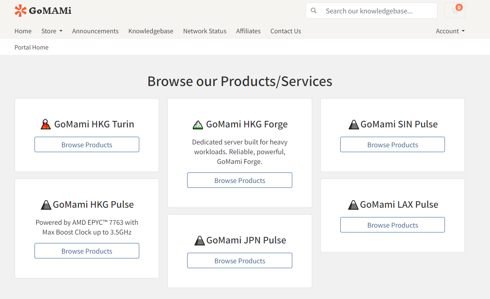

Gomami（官网 gomami.io）是一个面向全球用户的高性能服务器品牌，主要服务对象包括站长、开发者以及跨境业务用户。其整体定位偏向“高性能计算 + 跨境网络优化”，重点解决网站访问延迟、跨区域网络不稳定以及高并发业务承载问题，在亚洲线路尤其是中国方向的网络体验优化较为突出。
在网络架构方面，Gomami重点优化亚洲区域与中国大陆之间的访问质量，通过多运营商线路调度和路由优化降低延迟与丢包率。香港、日本、新加坡节点通常具备较低延迟表现，部分线路可实现中国大陆访问延迟在50ms以内甚至更低，香港方向在理想网络环境下可达到30ms级别体验。这种网络结构对于需要稳定访问中国及亚洲用户的业务具有较强实用价值。
Gomami的产品体系主要分为Turin、Pulse和Forge三大系列。Turin系列定位高性能计算节点，采用高主频CPU架构，适用于高负载应用、游戏服务器、实时通信系统以及对单核性能要求较高的业务场景。Pulse系列属于通用型云服务器，配置均衡，适合建站、企业应用部署、小型SaaS系统及跨境电商业务使用，覆盖香港、日本、新加坡等核心亚洲节点。Forge系列则更偏向独立服务器或高资源实例，提供更强的资源独占能力和更高的自定义空间，适用于中大型项目、数据处理和高并发系统。
硬件配置方面，Gomami普遍采用高性能CPU平台（如高频AMD Ryzen或EPYC架构），搭配NVMe固态硬盘与高带宽网络接口，在保证稳定性的同时提升IO性能与并发处理能力。部分高配实例支持更高vCPU与内存扩展，适用于流量型应用与计算密集型任务
整体产品设计更偏向实际业务需求，而不是单纯资源堆叠，强调真实访问体验与网络质量表现，适用于跨境独立站、外贸站点、游戏服务端、API节点及工具类应用等场景。对于普通低流量网站而言，其性能与网络优势会相对冗余，更适合对访问速度和稳定性有明确要求的业务使用。

系列主打中国大陆优化网络线路，强调香港节点低延迟访问与跨境稳定性，适用于独立站、电商系统、API 服务及跨境业务部署。整体产品设计以阶梯式套餐为主，用户可根据业务规模直接选择对应配置，实现快速部署与扩展。
快速、灵活、经济实惠 AMD EPYC™ 7763 · 3.5GHz CN2 9929 CMIN2
GoMami 香港 ASN 段（AS36002） IP：103.238.130.0/24香港 Kwai Chung 段，属于 HKG 网络池之一
| 套餐名称 | CPU | 内存 | 硬盘 (NVMe SSD) | 流量 | 端口速率 | 价格 (月付) | 特色 |
|---|---|---|---|---|---|---|---|
| AHKG.Pulse.Nano | 双核虚拟CPU | 2GB | 40GB | 500GB | 1Gbps VirtIO | $49.00 | 中国大陆优化专业版 |
| AHKG.Pulse.Mini | 双核虚拟CPU | 4GB | 60GB | 1000GB | 1Gbps VirtIO | $59.00 | 中国大陆优化专业版 |
| AHKG.Pulse.Air | 4个虚拟CPU | 8GB | 80GB | 2000GB | 1Gbps VirtIO | $119.00 | 中国大陆优化专业版 |
| AHKG.Pulse.Pro | 8个虚拟CPU | 16GB | 100GB | 5000GB | 3Gbps VirtIO | $269.00 | 中国大陆优化专业版 支持Windows系统 |
| AHKG.Pulse.Ultra | 16个虚拟CPU | 32GB | 300GB | 10000GB | 5Gbps VirtIO | $499.00 | 中国大陆优化专业版 支持Windows系统 |
HKG Turin 的核心特点在于其高性能硬件与网络优化线路，通常采用高频 AMD EPYC 等服务器级 CPU，强调单核性能与并发能力，同时对中国大陆方向做了专门路由优化（CN2 / 9929 / CMIN2 等混合优化线路），在香港节点中主打低延迟访问体验。
只有GoMami才能做到 AMD EPYC™ 9575F · 5GHz CN2 9929 CMIN2
为公布测试ipHKG 节点会分配在香港 ASN（如 AS36002）下的公网段，但这些 IP 不稳定
| 套餐名称 | CPU | 内存 | 硬盘 (NVMe SSD) | 流量 | 端口速率 | 价格 (月付) | 特色 |
|---|---|---|---|---|---|---|---|
| HKG.Turin.Mini | 双核虚拟CPU | 4GB | 100GB | 1000GB | 2Gbps VirtIO | $69.00 | 中国大陆优化专业版 |
| HKG.Turin.Air | 4个虚拟CPU | 8GB | 140GB | 2000GB | 2Gbps VirtIO | $129.00 | 中国大陆优化专业版 |
| HKG.Turin.Pro | 6个虚拟CPU | 16GB | 180GB | 5000GB | 5Gbps VirtIO | $299.00 | 中国大陆优化专业版 支持Windows系统 |
| HKG.Turin.Ultra | 12个虚拟CPU | 32GB | 220GB | 10000GB | 5Gbps VirtIO | $599.00 | 中国大陆优化专业版 支持Windows系统 |
GoMami 香港节点的“物理服务器/高性能裸金属系列产品页”，核心面向的是重负载、企业级应用和需要完全独占资源的用户。
该系列区别于 VPS，提供的是整机级别的物理服务器资源，采用 AMD EPYC 高核心数服务器平台（如 56C/112T 架构），配合大容量内存（128GB 起步，最高 256GB+）以及 NVMe SSD 存储组合，整体性能明显高于普通云 VPS。
产品分为 Mini 与 Air 等档位，均提供较高带宽（2Gbps）和较大流量（10TB–20TB），并支持额外 IP 扩展（每个 $10），适合需要多 IP 或多业务部署的场景。同时所有实例都标注 China Mainland Optimized Pro 网络优化线路，强调香港到中国大陆的低延迟与稳定回程。
专为高负载工作而打造的专用服务器。可靠、强大。 AMD EPYC™ 7663 · 3.5GHz
线路： HCN2 9929 CMIN2
| 套餐名称 | 平台 | CPU | 内存 | 硬盘 (NVMe SSD) | 端口速率 | 流量 | 价格 | 特色 |
|---|---|---|---|---|---|---|---|---|
| AHKG.Forge.Mini | TYAN B8033 | AMD EPYC 7663 (56核112线程) | 128GB | 960GB | 2G端口 | 10TB流量 (超出部分每GB 0.06美元) | $599.00/月 + $68.00设置费 |
中国大陆优化专业版 立即可用 额外IP地址：每个$10 (最多4个) 付款后立即激活 全自动设置 可随时重装系统 |
| AHKG.Forge.Air | TYAN B8033 | AMD EPYC 7663 (56核112线程) | 256GB | 4TB | 2G端口 | 20TB流量 (超出部分每GB 0.06美元) | $899.00/月 + $68.00设置费 |
中国大陆优化专业版 立即可用 额外IP地址：每个$10 (最多4个) 付款后立即激活 全自动设置 可随时重装系统 |
GoMami 日本节点的均衡型 VPS 产品页，主要展示的是部署在日本 JPN 数据中心的云服务器套餐，整体定位和 HKG/SIN Pulse 一致，属于标准“性能均衡 + 跨境优化线路”的产品线。 所有套餐均采用 NVMe SSD 存储与 1Gbps 网络端口，并统一标注 China Mainland Optimized Pro 路由优化，重点提升日本到中国大陆及亚洲区域的访问稳定性与延迟表现。
该页面提供从 Nano 到 Pro 的多档配置选择，基础配置为 2 vCPU / 2GB 内存 / 40GB NVMe / 500GB 流量，逐步提升到 16GB 内存与更高流量带宽的高配方案，满足从轻量网站、测试环境到中等负载业务的不同需求。
所有套餐均采用 NVMe SSD 存储与 1Gbps 网络端口，并统一标注 China Mainland Optimized Pro 路由优化，重点提升日本到中国大陆及亚洲区域的访问稳定性与延迟表现。
快速、灵活、经济实惠。AMD EPYC（霄龙）7773X | AMD EPYC（霄龙）7K83·3.5GHz
线路：CN2 9929 CMIN2
| 套餐名称 | CPU | 内存 | 硬盘 (NVMe SSD) | 流量 | 端口速率 | 价格 (月付) | 特色 |
|---|---|---|---|---|---|---|---|
| JPN.Pulse.Nano | 双核虚拟CPU | 2GB | 40GB | 500GB | 1Gbps VirtIO | $29.00 | 中国大陆优化专业版 |
| JPN.Pulse.Mini | 双核虚拟CPU | 4GB | 60GB | 1000GB | 1.5Gbps VirtIO | $49.00 | 中国大陆优化专业版 |
| JPN.Pulse.Air | 4个虚拟CPU | 8GB | 80GB | 2000GB | 1Gbps VirtIO | $89.00 | 中国大陆优化专业版 |
| JPN.Pulse.Pro | 8个虚拟CPU | 16GB | 100GB | 5000GB | 3Gbps VirtIO | $169.00 | 中国大陆优化专业版 支持Windows系统 |
| JPN.Pulse.Ultra | 12个虚拟CPU | 32GB | 300GB | 10000GB | 3Gbps VirtIO | $338.00 | 中国大陆优化专业版 支持Windows系统 |
GoMami 新加坡节点的均衡型 VPS 产品展示页，核心提供部署在新加坡数据中心的多档云服务器方案，整体定位与香港、日本 Pulse 系列一致，属于标准的通用型跨境优化产品。
该系列从 Nano 到 Pro 等多个档位逐级配置，基础规格通常为 2 vCPU / 2GB 内存 / 40GB NVMe / 500GB 流量起步，高配可扩展到更高内存与更大流量，适合从轻量网站到中等规模业务的不同使用需求。
所有套餐均采用 NVMe SSD 存储与 1Gbps 网络端口，并统一提供 China Mainland Optimized Pro 路由优化，重点提升新加坡到中国大陆及亚洲区域的访问速度与稳定性。
快速、灵活、经济实惠。AMD EPYC™ 7663 · 3.5GHz
线路：CN2 9929 CMIN2
| 套餐名称 | CPU | 内存 | 硬盘 (NVMe SSD) | 流量 | 端口速率 | 价格 (月付) | 特色 |
|---|---|---|---|---|---|---|---|
| ASIN.Pulse.Nano | 双核虚拟CPU | 2GB | 40GB | 500GB | 1Gbps VirtIO | $29.00 | 中国大陆优化专业版 |
| ASIN.Pulse.Mini | 双核虚拟CPU | 4GB | 60GB | 1000GB | 1Gbps VirtIO | $49.00 | 中国大陆优化专业版 |
| ASIN.Pulse.Air | 4个虚拟CPU | 8GB | 80GB | 2000GB | 1Gbps VirtIO | $89.00 | 中国大陆优化专业版 |
| ASIN.Pulse.Pro | 8个虚拟CPU | 16GB | 100GB | 5000GB | 3Gbps VirtIO | $169.00 | 中国大陆优化专业版 支持Windows系统 |
| ASIN.Pulse.Ultra | 12个虚拟CPU | 32GB | 300GB | 10000GB | 5Gbps VirtIO | $338.00 | 中国大陆优化专业版 支持Windows系统 |
GoMami 美国洛杉矶节点的均衡型 VPS 产品页，主要提供部署在 LAX 数据中心的多档云服务器方案，整体定位属于“北美通用 + 跨境优化型”产品线。
该系列从 Nano 到 Pro 提供阶梯式配置选择，基础规格通常为 2 vCPU / 2GB 内存 / 40GB NVMe / 500GB 流量起步，高配可扩展到更高内存与更大流量带宽，用于适配不同规模的业务需求。
所有套餐均采用 NVMe SSD 存储与 1Gbps 网络端口，并支持面向中国大陆及亚洲方向的优化路由，使其在跨境访问场景中具备更稳定的延迟表现，尤其适合中美之间或全球用户访问的业务。
快速、灵活、经济实惠。AMD EPYC™ 7K62 · 3.3GHz
线路：CN2 9929 CMIN2
| 套餐名称 | CPU | 内存 | 硬盘 (NVMe SSD) | 流量 | 端口速率 | 价格 (月付) | 特色 |
|---|---|---|---|---|---|---|---|
| LAX.Pulse.Nano | 双核虚拟CPU | 2GB | 40GB | 1000GB | 1Gbps VirtIO | $29.00 | 中国大陆优化专业版 |
| LAX.Pulse.Mini | 双核虚拟CPU | 4GB | 60GB | 2000GB | 1Gbps VirtIO | $59.00 | 中国大陆优化专业版 |
| LAX.Pulse.Air | 4个虚拟CPU | 8GB | 80GB | 4000GB | 2Gbps VirtIO | $129.00 | 中国大陆优化专业版 |
| LAX.Pulse.Pro | 6个虚拟CPU | 16GB | 100GB | 8000GB | 3Gbps VirtIO | $259.00 | 中国大陆优化专业版 |
| LAX.Pulse.Ultra | 12个虚拟CPU | 32GB | 300GB | 15000GB | 5Gbps VirtIO | $599.00 | 中国大陆优化专业版 |
| LAX.Pulse.Titan | 12个虚拟CPU | 32GB | 600GB | 30000GB | 10Gbps VirtIO | $999.00 | 中国大陆优化专业版 |
GoMami 的产品线怎么分？有什么区别？
整体分三条线：Pulse、Turin、Forge。 Pulse 是均衡型 VPS，适合建站和常规业务；Turin 是高性能旗舰 VPS，强调单核性能和高负载能力；Forge 是独立服务器，资源完全独占，适合重型业务和企业级部署。三个系列覆盖从轻量到重载的完整场景。
香港、日本、新加坡节点怎么选？
如果用户主要是中国大陆访问，香港是首选，延迟最低；日本适合电商和东亚用户覆盖；新加坡更偏东南亚市场，同时对移动网络表现更友好。整体思路就是“按用户群分布选节点”，不是单纯看配置。
Pulse 系列适合做什么业务？
Pulse 属于标准均衡型 VPS，典型用途就是独立站、WordPress、企业官网、轻量 API、跨境电商后台等。特点是配置稳定、带宽够用、价格相对可控，适合长期跑业务，不适合特别重的计算或高频交易场景。
GoMami 的网络优化到底有什么区别？
核心点是“亚洲优化 + 中国大陆方向优化”。香港、日本、新加坡节点普遍对三网（电信、联通、移动）做了路由优化，重点改善回程路径和晚高峰稳定性，所以在跨境访问场景下比普通国际 VPS 更稳、更低延迟。
这个品牌值不值得长期用？有什么局限？
适合长期业务用，尤其是有明确跨境流量和稳定性要求的项目。优势是线路和性能都比较强，适合生产环境。但缺点是价格不算低，不适合纯测试、学习或者极低成本项目，属于“稳定优先型”而不是“性价比极限型”。
香港VPS商家多到眼花，实测下来搬瓦工线路最稳，CN2 GIA三网直连，就是价格贵退款慢。狗云便宜工单快，35元/月性价比高，但得实名。TmhHost最便宜但带宽抠门，适合轻度用户。DMIT高端路线，带DDoS防护，建站土豪首选。要我说，普通用户狗云够用，追求稳定就搬瓦工，别贪便宜买小作坊，跑路就惨了。

买香港云服务器最怕遇到假"云"，实际是超售VPS。真云服务器要认准独享资源，像DMIT、搬瓦工这种老牌稳但贵。狗云价格亲民，工单响应快，适合预算有限的。JTTI线路不错，就是带宽小了点。千万别信那些几十块一年的"香港云"，基本都是共享资源，晚高峰卡到你怀疑人生。记住，便宜没好货，尤其是服务器这种长期用的东西。

不想实名？DMIT和JTTI这两家不用实名，DMIT走高端路线，价格劝退但线路稳如狗。JTTI性价比更高，CN2 GIA线路，就是带宽小了点儿。搬瓦工虽然也不用实名，但退款太磨叽。要我说，轻度用户选JTTI够用，建站不差钱就上DMIT。那些要实名的便宜货，指不定哪天就让你补证件，烦得很。

买服务器最怕被套牢，实测退款最爽快的是狗云，3天内流量不超5%就能退。DMIT和JTTI退款政策还行，但DMIT价格太高，退起来肉疼。TmhHost虽然便宜，但退款条款模糊。建议买之前先看退款政策，别等用着不爽才发现退不了，那才叫一个绝望。记住，能随时撤退的商家才是好商家。

 香港机房
香港机房 日本机房
日本机房 美国机房
美国机房 新加坡机房
新加坡机房